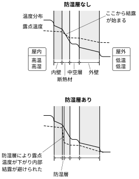

2026年
問題48 冬期における結露に関する次のア〜ウの文章の 内の語句のうち，最も不適当なものはどれか．
ア 通常，室内においては，空気中の絶対湿度の空間的な分布は（1）比較的小さい ．そのため，外壁に面して設置した家具の裏側などは温度が下がりやすく，飽和水蒸気圧が（2）低下し ，結果として結露が発生しやすい場所となる．
イ 窓の（3）アルミサッシ や壁体の（4）防湿層 が切れている場所では，表面結露の原因となる熱橋を生じる．
ウ 内部結露を防ぐための方策としては，断熱層の（5）室内側 に防湿層を設ける方法が一般的に採用される．
2026年
問題48 正解（4） 頻出度AAA
-(4)は「防湿層が切れている場所」 ⇛ 「断熱層が切れている場所」が正しい．
熱橋については2026-48-1図参照．
2026-48-1図 熱橋
物体の表面に結露を生じさせないためには，物体の表面温度をそれに接する空気の露点温度より高く保つ必要がある．そのためには断熱材を使って物体の温度を高く保つか，空気の絶対湿度を下げて露点をできるだけ低く保つことが必要である．
内部結露については，冬季の場合，暖房によって屋内が高温多湿なので，室外に向かって熱流が流れると同時に，水蒸気も水蒸気圧の差によって屋内から屋外に向かって湿流が生じる．壁の部材の温度は内 ⇛ 外に向かって温度が低下し，壁内部の空気の露点温度と交わる点から結露が始まる．これを防ぐには，断熱材の室内側に防湿層を設けて，断熱材の外側の低温部に湿流が回って内部結露するのを防げばよい（2026-48-2図参照）．
夏の場合は，冷房によって屋外側に防湿層が要ることになる．
2026-48-2図 内部結露防止のための防湿層の位置
